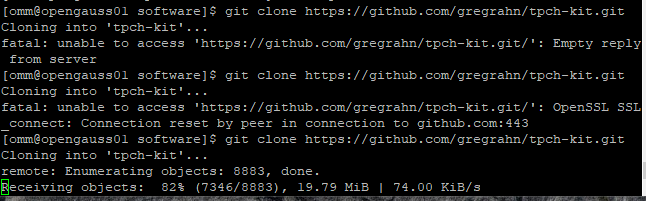
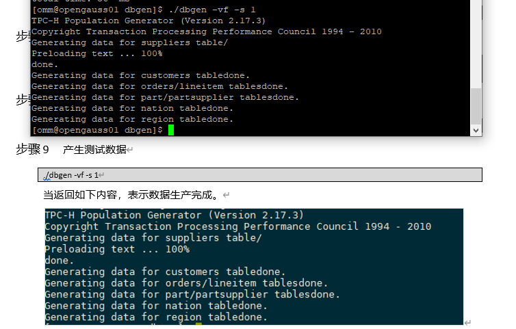

记录openGauss实验过程
gitee地址
预下载工具
文档
openGauss的AI特性实践 华为云实验环境搭建指南（学生版） v1.2.docx
openGauss的AI特性实践实验手册（学生版） v1.2.docx
过程记录
（无特殊说明即依照文档进行操作）
设置华为云服务器
创建虚拟私有云
注意可能重名的情况应当更改命名以避免不可知的问题
购买ECS
(带宽从$5$M提高到$20$M)
问题-201：主机安全选项？（选择了打开-基础版）
问题-301：网络配置信息？（无带宽类型）
记录-401：云服务器opengauss01密码：openGauss21
记录-601：弹性IP：124.71.226.133
Q2.5：为何在购买ECS服务器前，需要配置VPC？
A：ECS弹性云服务器需要建立在VPC虚拟私有云上（？
释放云服务器（在完成实验后）
在ECS界面找到所申请的云服务器资源，在操作-更多中删除，并释放云服务器绑定的弹性公网IP地址、删除云服务器挂载的数据盘。
Q3.3：删除ECS时，为何需要释放弹性公网IP和删除云服务器挂载的数据盘？
A：避免不必要的资源占用和收费（？
关卡一：openGauss数据安装及基本操作
2.2.1:
记录301：修改omm用户密码：gaussDB21
下载501：wget https://opengauss.obs.cn-south-1.myhuaweicloud.com/1.1.0/openGauss-third_party_binarylibs.tar.gz（～2.5G/40min）
实际速度（带宽为5M）：
记录801：下载cmake 3.20.0 Official
2.2.2:
记录301：建议把所有export加入~/.bash_profile（建议改用~/.bashrc）
记录801：gs_initdb：passwd=gaussDB21
截图1100：
问题1101：是否一定要修改密码？
问题1102：修改密码的语法？（REPLACE grammar：ALTER USER jim IDENTIFIED BY ‘Abcd@123’ REPLACE ‘Bigdata@123’;？）
记录1103：未修改密码（此步跳过）
2.2.3:
验证101：
验证201：
Q301A：2.2.4->QA + 验证101 + 验证201
2.2.4:
QA：从gitee下载的源安装包所含的是c/c++源代码，需要经过编译才能运行。步骤包含：
- 环境准备
- 下载第三方编译库（gcc/g++）
- 配置环境变量
- 下载openGauss源码，编译并安装
- 初始化并启动数据库
关卡二：openGauss数据导入及基本操作
3.2.1:
注意201：从github进行git clone可能需要多次尝试（网络原因）
截图202：
问题401：cd目录不存在（结合后面make大概是最后chown目录是多余的？）
问题601：gsql时command not found（返回前面配置环境变量处重新配置，疑似每次重新登录都需要重新配置环境变量（是否应当使用.bashrc代替.bash_profile，尽管都是初始化配置））
记录901：
记录902：
记录1201：
记录1801：需要文件target.sql（待上传）
问题2001：gsql时需要密码但密码不正确（我也不知道密码是啥……前面没改密码和这是不是多少有点关系）（upd：没有一点关系……光速道歉）
解决2001：gsql -U omm -d tpch -p 5432 -r -f /opt/software/target.sql > /opt/software/target.log
截图2101：
3.2.2:
截图401：
截图501：
截图601：
截图701：
截图801：
截图901：
截图1001：
截图1101：
结论1201：行存表和列存表的主要区别为行连续和列连续的存储方式。对于行存表，每一条记录是连续的，每一条记录所占空间大小是固定的，则找到某一条记录时其相对于列存表会更高效；对于列存表，所有数据的某种特定属性数据连续，则其求和和求均值时访问的数据连续，与行存表每次需要向后跳多个指针位置相比更高效。
3.2.3.1:
截图201：
截图401：
截图701：
3.2.3.2:
截图201：
截图501：
截图801：
结论1001：全量物化视图会对当前数据库的视图进行完全更新，即涉及全部数据；增量物化视图只会对数据库的视图进行部分更新，即只涉及发生修改/更新的数据。全量物化能保证数据视图保持有序性，但更新的时间复杂度较高；增量更新的时间复杂度较低，但也牺牲了视图的有序性。
3.2.5（思考题）：
Q：行存表与列存表在执行相同的SQL语句时，为何执行的时间不同？在执行哪些类型SQL时，行存表效率更高？在执行哪些类型SQL时，列存表效率更高？全量物化视图与增量物化视图有哪些差别？
A：行存表和列存表的主要区别为行连续和列连续的存储方式。对于行存表，每一条记录是连续的，每一条记录所占空间大小是固定的，则找到某一条记录时其相对于列存表会更高效；对于列存表，所有数据的某种特定属性数据连续，则其求和和求均值时访问的数据连续，与行存表每次需要向后跳多个指针位置相比更高效。全量物化视图会对当前数据库的视图进行完全更新，即涉及全部数据；增量物化视图只会对数据库的视图进行部分更新，即只涉及发生修改/更新的数据。全量物化能保证数据视图保持有序性，但更新的时间复杂度较高；增量更新的时间复杂度较低，但也牺牲了视图的有序性。
关卡三：openGauss的AI4DB特性应用
4.2.1:
问题101：无法安装X-Tuner
upd-0713: 手册更新为V2.0，已在记录V2中重开
重点记录
- 行存和列存
- 全量/增量物化视图